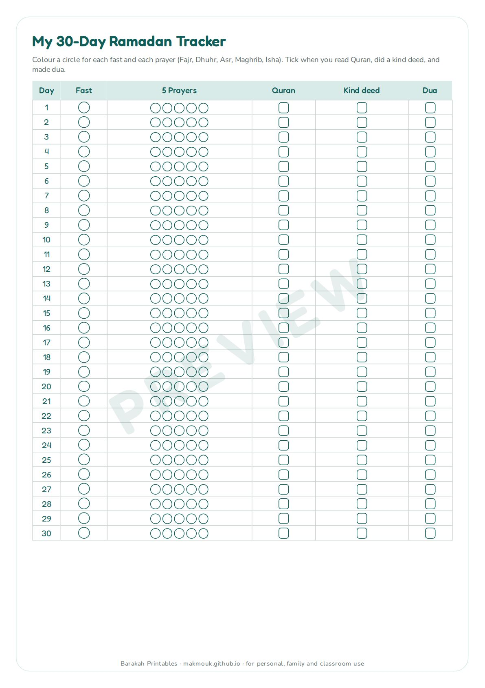
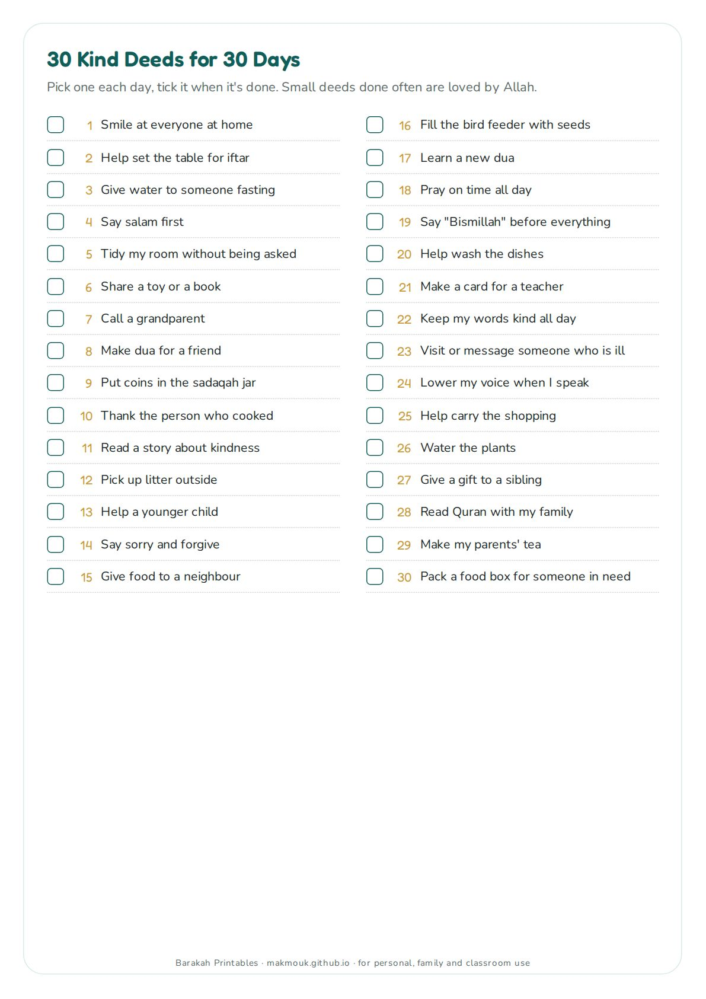
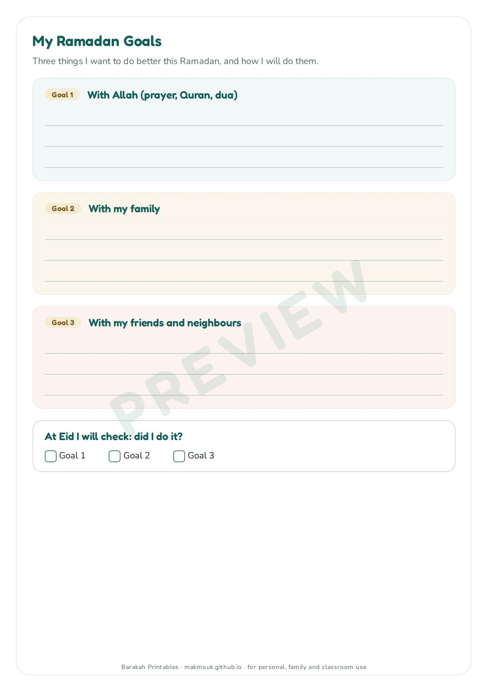
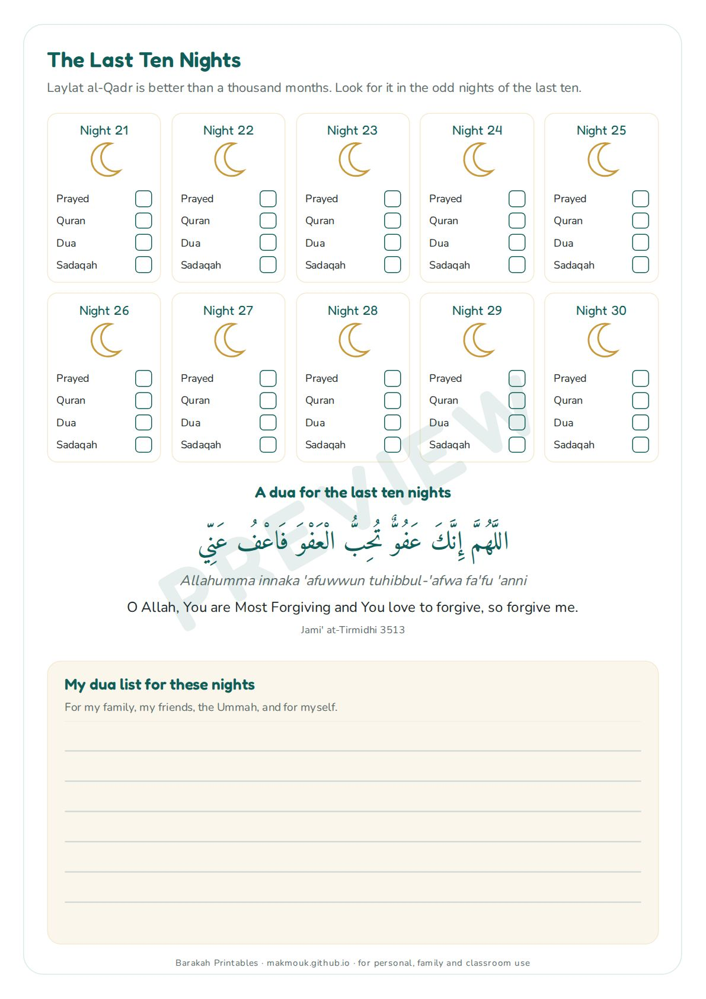
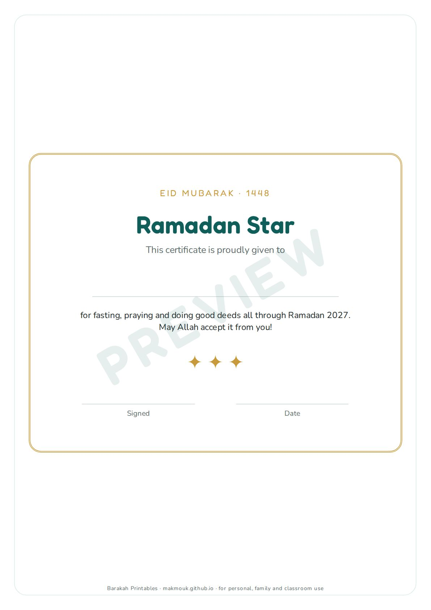

Ramadan 1448 · Printable
Ramadan 2027 Good Deeds Tracker for Kids
30 days of fasting, prayer, Quran and kindness
A calm, ink-friendly Ramadan planner for children aged 5-12. Kids colour in each fast, each prayer and each page of Quran, choose a kind deed for every day from a list of 30 ideas, set three Ramadan goals, follow the last ten nights, and finish with a certificate to sign at Eid. No faces or people drawn, no music, just print and use.
- 6 A4 pages, prints on US Letter too
- Ages 5-12
- Ink-friendly, no faces, no music
Download free sample (2 pages)
All-Access Library opening soon
The full version will be in the All-Access Library.